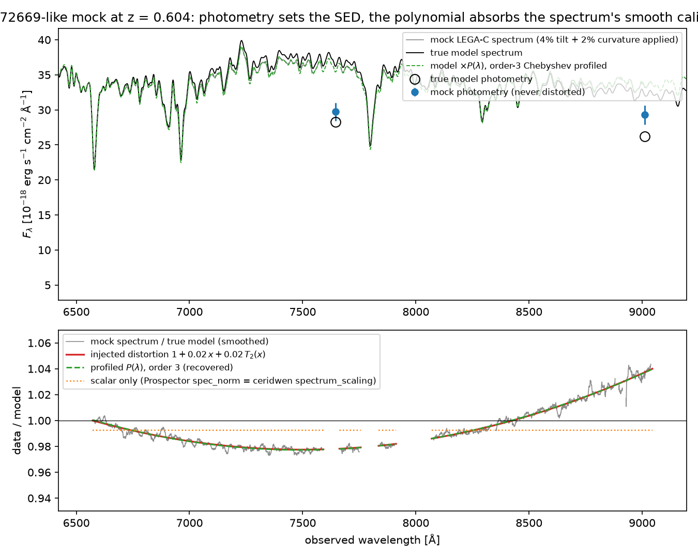

Ceridwen calibration polynomial
Draft. What a spectrophotometric calibration polynomial does, whether Ceridwen had one on the sampled path, the profiled Chebyshev implementation on branch calibration-polynomial, and its measured effect on mocks and two LEGA-C DR2 targets.
What the polynomial does
A slit or fibre spectrum carries a smooth, wavelength-dependent flux-calibration error of a few percent: flux-standard and response errors, slit losses that change with seeing and wavelength, differential atmospheric refraction, and extraction or sky-subtraction residuals. Broadband photometry from imaging does not share these errors. In a joint fit the spectrum contributes thousands of pixels, so an uncorrected 2 to 4 percent tilt dominates the likelihood and pulls the stellar-population parameters.
Prospector's answer is a multiplicative spectrophotometric calibration vector: the model spectrum is multiplied by spec_norm × (1 + Σm≥1 am Tm(x)), a low-order Chebyshev polynomial in a wavelength coordinate x ∈ [−1, 1]. The photometry sets the absolute SED shape and normalisation; the polynomial absorbs the spectrum's smooth calibration error, and the spectrum keeps only its line and narrow-continuum information. The coefficients am are not sampled: because the model is linear in them, Prospector solves the weighted least-squares problem at every likelihood call (polyopt in PolySedModel.spec_calibration) and plugs the solution in (a profile likelihood). spec_norm is the scalar normalisation, sampled or fixed.

spectrum_scaling-only model would use.Liu Hao's reading, "this calibrates the spectroscopy/photometry mismatch", is right with one refinement: the polynomial calibrates the spectrum onto the photometry, never the reverse, and it removes only the smooth part of the mismatch. Absorption-line depths and widths are untouched because the polynomial cannot bend on the scale of a line. A pure scalar (spec_norm, Ceridwen's spectrum_scaling) removes the mean offset only; a tilt or curvature remains and is fitted by the stellar-population and dust parameters instead.
Ceridwen before this branch
Spectrum.fit_polynomial_calibration(ceridwen/observation/spectrum.py:1014-1078onmain) solved the same weighted least-squares Chebyshev fit in NumPy, but nothing in the package called it. Notebooks call it after a fit to draw a calibrated median model. It was dead code with respect to the likelihood.- The sampled path is
MultiObservationLikelihood.make_lnprobfn(ceridwen/likelihood/likelihood.py:875-932) →SedModel.predict(ceridwen/model/model.py:369) →CSPBasis._project_observations(ceridwen/csp/csp.py:1300-1418) →DiagonalNoiseModel.compute(ceridwen/likelihood/noise_model.py:283-368) →lnlike_diag_gaussian(likelihood.py:175-264). No polynomial anywhere on it. spectrum_scalingis Prospector'sspec_norm: a sampled scalar multiplied into theSpectrumprediction only (csp.py:1361-1362and1410-1416). The DR2 notebook gives it aClippedNormal(1, 0.3)prior and addslog_f_calib, a model-anchored fractional noise term of 1 to 10 percent that inflates the spectrum errors instead of correcting the shape.Spectrum.log_likelihood, the staticcalibration=vector,noise_floor, andsky(spectrum.py:875-1013) are not on the sampled path either; they serve GP and custom pipelines.
Implementation on the branch
ceridwen/likelihood/calibration.py adds PolynomialCalibration: a static Chebyshev basis built once from the pixel grid (the unmasked range maps to x ∈ [−1, 1]), a pure-JAX weighted least-squares solve on the normal equations at every call, an optional Gaussian prior on the coefficients (a ridge term plus its log-density), and a choice of whether the constant term is part of the basis. DiagonalGaussianLikelihood(calibration=...) replaces the model spectrum by P(x) × μ before the noise model and the Gaussian kernel, in both __call__ and the jitted factory. Absent, every existing fit is unchanged. The weights are the observational uncertainties, as in Prospector, so the solution is a deterministic function of θ and never feeds back through the model-anchored log_f_calib term.
ceridwen/likelihood/calibration.py · PolynomialCalibration.solve
safe_sigma = jnp.where(mask, jnp.asarray(sigma), 1.0)
# Whitened, masked design matrix and residual: rows outside the mask
# are exactly zero, so they drop out of the normal equations.
weight = jnp.where(mask, mu / safe_sigma, 0.0) # (n_pix,)
design = self.basis * weight[:, None] # (n_pix, k)
target = jnp.where(mask, (y - mu) / safe_sigma, 0.0) # (n_pix,)
normal = design.T @ design # (k, k)
rhs = design.T @ target # (k,)
if self.prior_sigma is not None:
normal = normal + jnp.eye(self.n_coeff) / self.prior_sigma ** 2
return jnp.linalg.solve(normal, rhs)Documented contract: "Weighted least-squares coefficients a of y ~= mu (1 + basis @ a). Pure JAX (jit/grad safe). Masked pixels carry zero weight. With a prior_sigma the normal equations get the ridge term I / prior_sigma**2."
Why it matters: the solve is a (k × k) system with k ≤ 5, so the polynomial costs one small matrix solve per likelihood call on top of the SED model, and no extra sampled dimensions.
Tests in tests/test_polynomial_calibration.py: exact recovery of an injected polynomial without noise, recovery to better than 1 percent at S/N 20, masked pixels excluded, the constant absorbed only with fit_constant, the prior shrinking the coefficients and adding the right penalty, the profile likelihood on tilted data matching the untilted likelihood, jit and gradient through make_lnprobfn, and recovery of a tilt through the alpha-enhanced forward model on the DR2 grid. Spectrum.fit_polynomial_calibration now calls the same kernel, so the post-hoc plot and the in-likelihood profile cannot disagree.
Experiment
scripts/calibration_polynomial_experiment.py reproduces the integrated notebook's full_spectrum joint fit (selection, observations, priors, transforms, 500 live points, 65 inner steps, 100 deletions, logZ_tol −5) and adds the switches. Mocks use M5_172669's pixel grid, uncertainties, masks, and filters; the truth is the weighted posterior median of the stored full-spectrum fit; the distortion 1 + (T/2) x + C T2(x) multiplies the spectrum only; one noise realisation with seed 20260902 is shared by every mock arm. All arms ran on one RTX 5060 Ti 16 GB in one boot.